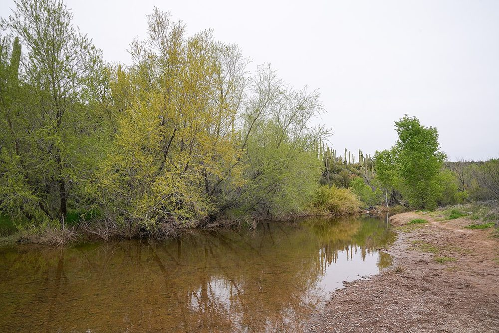

Tile Installation in Cave Creek, AZ
Cave Creek is desert living, with covered patios, pools, and homes that open to the outdoors. Many homes here, including the Tatum Ranch homes built in the 1990s, have tile floors through the main living areas, a covered patio off the kitchen, and a primary bath designed to feel like a spa. Tile work here has to handle sun, water, and the step between inside and outside.

Indoor-outdoor tile, done as one decision
A lot of Cave Creek homes have an accordion glass wall or a wide sliding door between the kitchen and the patio, so the tile inside and outside is really one surface. The same tile can work in both places, but only if it is rated for outdoor use, and only if the doorway, floor heights, and drainage are planned first. We check those before deciding how the two areas should meet.
Patios, pools, and outdoor living
Covered patios, outdoor kitchens, fireplaces, and pools are part of everyday life in Cave Creek. Outdoor tile needs to suit the sun and the water it will see, and the joints need room for movement. New tile will not fix a drainage problem underneath it, so we look at where water collects after rain, and at the thresholds and steps, before setting anything.
Bathrooms and floors in Cave Creek homes
Inside, tile floors are common through the whole home, often in a travertine Versailles pattern or a large format porcelain. Primary baths often have dual vanities, a deep soaking tub, and a separate tiled shower. We install the tile, the shower walls and floors, and the backsplashes that tie the kitchen and bath together, with the same prep and waterproofing we use everywhere else.
What we review before tile work in Cave Creek
- The room, the material, and what you want changed
- The existing surface, and the waterproofing and prep it needs
- Layout, grout lines, and transitions to adjoining floors
- Scheduling, access, and how the work fits around your home
Questions about tile work in Cave Creek
Can I use the same tile inside and outside?
Sometimes, but the tile must be rated for both uses. We also need to check the doorway, floor heights, and outdoor drainage before deciding how the two areas should meet.
Will patio tile hold up in the Cave Creek sun?
It can, if the tile is rated for outdoor use and the installation allows for movement and drainage. Dark tile and direct sun need extra care in the layout, and we will talk through that for your specific patio.
Do you install pool tile?
We install tile around pools and in pool areas as part of a tile project. Tell us about the pool, the existing surface, and what needs work, and we will tell you what we can take on.
Also serving: Phoenix Scottsdale Anthem. See all service areas.
Call (602) 884-1904 to talk through your project and set up a free estimate.